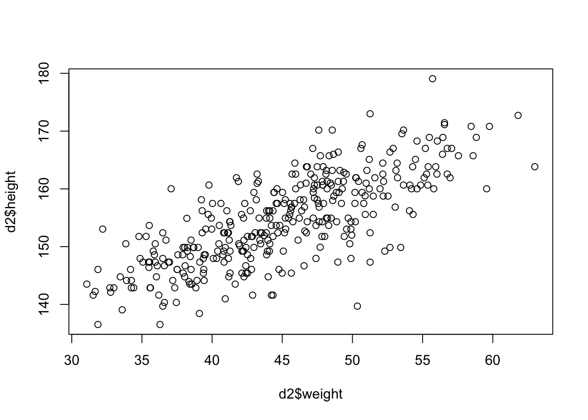
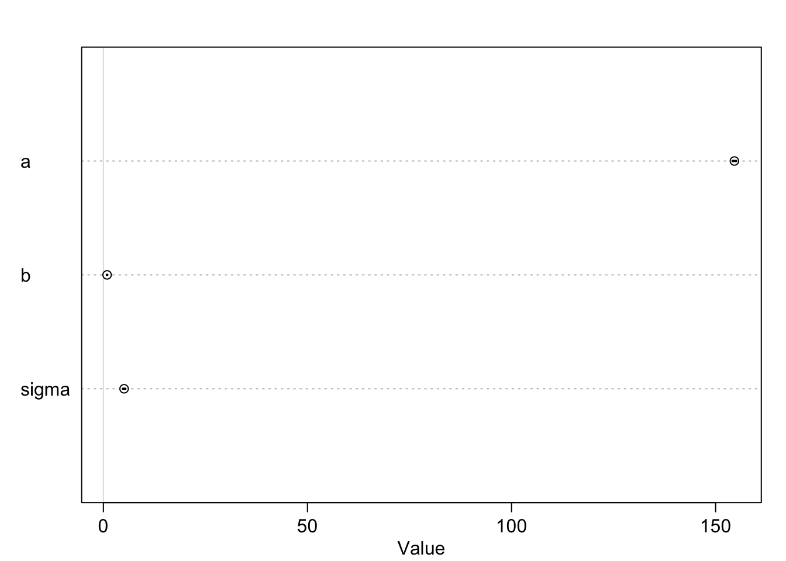

Chapter 3 Simple Linear Regression
3.1 Simple Linear Regression in the Bayesian Framework
We will now add one covariate/explanatory variable to the model. Refer to Statistical Rethinking “4.4 Linear prediction” or “4.4 Adding a predictor” as it’s called in the online version of the book.
So far, our “regression” did not do much to be honest. The mean of a list of values was already calculated in the descriptive statistics section before and we have mentioned how great this statistic is as measure of location and where its weaknesses are.
Now, we want to model how body height and weight are related. Formally, one wants to predict body heights from body weights.
Here and in the frequentist framework, we will see that it is not the same problem (and therefore results in a different statistical model) to predict body weights from body heights or vice versa.
The word “predictor” is important here. It is a technical term and describes a variable that we know (in our case weight) and with which we want to “guess as good as possible” the value of the dependent variable (in our case height). “As good as possible” means that we put a penalty on an error. The farer our prediction is aways from the true value (\(y_i\)), the higher the penalty. And not only that, but if you are twice as far away from the true value, you should be penalized four times as much. This is the idea behind the squared error loss function and the core of the least squares method. What if we would punish differently you ask? There are many loss functions one could use, maybe we will see some later. For now, we punish quadratically.
We always visualize the data first to improve our understanding.

It’s not often, that you see such a clean plot. The scatterplot indicates a linear relationship between the two variables. The higher the weight, the higher the height; with some deviations of course and we decide that normally distributed errors are a good idea. This relationsip is neither causal, not deterministic.
- It is not causal since an increase in weight does not necessarily lead to an increase in height, especially in grown-ups.
- It is not deterministic since there are deviations from the line. It if was deterministic, we would not need statistical modeling.
For simpler notation, we will call d2$weight \(x\). \(\bar{x}\)
is the mean of \(x\).
3.1.1 Model definition
Let’s write down our model (again with the Swiss population prior mean):
\[\begin{eqnarray*} h_i &\sim& \text{Normal}(\mu_i, \sigma)\\ \mu_i &\sim& \alpha + \beta (x_i - \bar{x})\\ \alpha &\sim& \text{Normal}(171.1, 20)\\ \beta &\sim& \text{Normal}(0, 10)\\ \sigma &\sim& \text{Uniform}(0, 50) \end{eqnarray*}\]
Visualization of the model structure:
There are now additional lines for the priors of \(\alpha\) and \(\beta\). The model structure also shows the way to simulate from the prior. One starts at the top and ends up with the heights.
- \(h_i\) is the height of the \(i\)-th person and we assume it is normally distributed.
- \(\mu_i\) is the mean of the height of the \(i\)-th person and we assume it is linearly dependent on the difference \(x_i-\bar{x}\). Compared to the intercept model, a different mean is assumed for each person depending on his/her weight.
- \(\alpha\) is the intercept and we use the same prior as before.
- \(\beta\) is the slope of the line and we use the normal distribution as prior for it, hence it can be positive or negative and how plausible each value is, is determined by that specific normal distribution. Note, that we could easily adapt the distribtion to any distribution we like.
- The prior for \(\sigma\) is unchanged.
- \(x_i - \bar{x}\) is the deviation of the weight from the mean weight, thereby we center the weight variable. This is a common practice in regression analysis.
The linear model is quite popular in applied statistics and one reason is probably the rather straightforward interpretation of the coefficients.
3.1.2 Priors
We want to plot our priors to get a feeling what the model would predict without seeing the data. This is a kind of “sanity check” to see if the priors are reasonable.
set.seed(2971)
N <- 100 # 100 lines
a <- rnorm(N, 171.1, 20)
b <- rnorm(N, 0, 10)
# Assume d2$weight is defined, e.g., using some dataset or simulation
xbar <- mean(d2$weight)
plot(NULL, xlim = range(d2$weight), ylim = c(-100, 400),
xlab = "weight", ylab = "height")
abline(h = 0, lty = 2) # horizontal line at 0
abline(h = 272, lty = 1, lwd = 0.5) # horizontal line at 272
mtext("b ~ dnorm(0, 10)")
# Overlay the 100 lines
for (i in 1:N) {
curve(a[i] + b[i] * (x - xbar),
from = min(d2$weight), to = max(d2$weight),
add = TRUE, col = col.alpha("black", 0.2))
}
This relationship seems rather non-restrictive. According to our priors, one could see very steeply rising or falling lines. We could at least make the priors for the slope (\(\beta\)) non-negative. One possibility to do this is to use a log-normal distribution for the prior of \(\beta\) which can only take non-negative values.
\[ \beta \sim \text{Log-Normal}(0, 1) \]
Lets plot the priors again.
set.seed(2971)
N <- 100 # 100 lines
a <- rnorm(N, 171.1, 20)
b <- rlnorm(N, 0, 1)
# Assume d2$weight is defined, e.g., using some dataset or simulation
xbar <- mean(d2$weight)
plot(NULL, xlim = range(d2$weight), ylim = c(-100, 400),
xlab = "weight", ylab = "height")
abline(h = 0, lty = 2) # horizontal line at 0
abline(h = 272, lty = 1, lwd = 0.5) # horizontal line at 272
mtext("b ~ dlnorm(0, 1)")
# Overlay the 100 lines
for (i in 1:N) {
curve(a[i] + b[i] * (x - xbar),
from = min(d2$weight), to = max(d2$weight),
add = TRUE, col = col.alpha("black", 0.2))
}
This seems definitely more realistic.
3.1.3 Fit model
Now, let’s estimate the posterior/fit the model as before:
# load data again, since it's a long way back
library(rethinking)
data(Howell1)
d <- Howell1
d2 <- d[d$age >= 18, ]
xbar <- mean(d2$weight)
# fit model
mod <- quap(
alist(
height ~ dnorm(mu, sigma),
mu <- a + b * (weight - xbar),
a ~ dnorm(171.1, 100),
b ~ dnorm(0, 10),
sigma ~ dunif(0, 50)
) ,
data = d2)Let’s look at the marginal distributions of the parameters:
## mean sd 5.5% 94.5%
## a 154.5972120 0.27033045 154.1651717 155.0292523
## b 0.9050131 0.04192754 0.8380048 0.9720214
## sigma 5.0718673 0.19115323 4.7663675 5.3773671The analysis yields estimates for all our parameters of the model: \(\alpha\), \(\beta\) and \(\sigma\). The estimates are the mean of the posterior distribution.
See exercise 2.
Interpretation of \(\beta\): The mean of the posterior distribution of \(\beta\) is 0.9. A person with a weight of 1 kg more weight can be expected to be 0.9 cm taller. A 96% credible interval for this estimate is \([0.83, 0.97]\). We can be quite sure that the slope is positive.
It might also be interesting to inspect the variance-covariance matrix, respectively the correlation between the parameters as we did before in the intercept model.
## a b sigma
## 0.073078550 0.001757918 0.036539558## a b sigma
## a 1.000000e+00 -9.591866e-10 3.330963e-05
## b -9.591866e-10 1.000000e+00 -2.879607e-05
## sigma 3.330963e-05 -2.879607e-05 1.000000e+00As we can see the correlations are near zero. Compare to the graphical display of the model structure. There is no connection.
3.1.4 Result
Graphical end result of fitting the model:
plot(d2$height ~ d2$weight, col = rangi2)
post <- extract.samples(mod)
a_quap <- mean(post$a)
b_quap <- mean(post$b)
curve(a_quap + b_quap * (x - xbar), add = TRUE)
3.1.5 Credible bands
We could draw again and again from the posterior distribution and calculate the means like above. Plotting the regression lines with the respective parameters \(\alpha\), \(\beta\) would indicate the variability of the estimates.
# Define a sequence of weights for predictions
weight.seq <- seq(from = 25, to = 70, by = 1)
# Use the model to compute mu for each weight
mu <- link(mod, data = data.frame(weight = weight.seq))
str(mu)## num [1:1000, 1:46] 138 136 137 136 137 ...# Visualize the distribution of mu values
plot(height ~ weight, d2, type = "n") # Hide raw data with type = "n"
# Loop over samples and plot each mu value
for (i in 1:100) {
points(weight.seq, mu[i, ], pch = 16, col = col.alpha(rangi2, 0.1))
}The link function fixes the weight at the values in weight.seq and
draws samples from the posterior distribution of the parameters. We will do
the analog thing in the frequentist framework.
We can also draw a nice shade for the regression line:
# Summarize the distribution of mu
mu.mean <- apply(mu, 2, mean)
mu.PI <- apply(mu, 2, PI, prob = 0.89)
plot(height ~ weight, d2, col = col.alpha(rangi2, 0.5))
lines(weight.seq, mu.mean)
shade(mu.PI, weight.seq)
As we can see, we are pretty sure about the mean of height which we wanted to model in the first place. Mean modeling is one thing, individual prediction is another. Given a certain weight of a person, what is the height of the same person? The first line in the model definition (\(height_i \sim Normal(\mu_i, \sigma)\)) tells us that a person’s weight is distributed around the mean (which linearly depends on weight) and is not necessary the mean itself.
To get to an individual prediction, we need to consider the uncertainty
of the parameter estimation and the uncertainty from the Gaussian distribution
around the mean (at a certain weight). We do this with sim.
# Simulate heights from the posterior
sim.height <- sim(mod, data = list(weight = weight.seq))
str(sim.height)## num [1:1000, 1:46] 138 130 130 147 136 ...# Compute the 89% prediction interval for simulated heights
height.PI <- apply(sim.height, 2, PI, prob = 0.89)
# Plot the raw data
plot(height ~ weight, d2, col = col.alpha(rangi2, 0.5))
# Draw MAP (mean a posteriori) line
lines(weight.seq, mu.mean)
# Draw HPDI (highest posterior density interval) region for mu
shade(mu.PI, weight.seq)
# Draw PI (prediction interval) region for simulated heights
shade(height.PI, weight.seq)The lighter and wider shaded region is where the model expects to find 89% of the heights of a person with a certain weight.
This part is sometimes a bit desillusioning when seen for the first time: Draw a horizontal line at 150 cm and see how many weights (according to the individual prediction) are compatible with this height. Weights from 30 to 50 kg are compatible with this height according to the 89% prediction interval. The higher the credibility, the wider the interval, the wider the range of compatible weights (more than 60% of the weight-range).
## [1] 0.62653623.1.6 Summary
- We have added a covariate (weight) to the simple mean model to predict height.
- We have centered the weight variable.
- We have defined and refined priors for the intercept and slope.
- We have estimated the posterior distribution of the parameters using quadratic approximation with
quap. - We have visualized the result.
- We have created credible bands for mean and individual predictions.
3.2 Simple Linear Regression in the Frequentist Framework
We will now do the same analysis in the frequentist framework while introducing some foundational theory along the way. I recommend reading the first couple of chapters from Westfall.
3.2.1 Model definition
Our linear model is defined as:
\[ h_i = \beta_0 + \beta_1 x_i + \varepsilon_i \]
where
- \(\varepsilon_i\) is the error term with \(\varepsilon_i \sim N(0, \sigma), \forall i\)
- \(\beta_0\) is the unknown but fixed intercept
- \(\beta_1\) is the unknown but fixed slope
3.2.1.1 Model Assumptions of the Classical Regression Model (Westfall, 1.7):
The first and most important assumption is that the data are produced
probabilistically, which is specifically stated as
\[ Y|X = x \sim p(y|x)\]
What does this mean?
- \(Y|X = x\) is the random variable Y conditional on X being equal to x, i.e. the distribution of \(Y\) if we know the value of \(X\) (in our example the weight in kg). This is a nice image of what is meant here.
- \(p(y|x)\) is the distribution of potentially observable \(Y\) given \(X = x\). In our case above this was the normal distribution with mean \(\mu_i\) and variance \(\sigma\).
{kind=link}
You can play with this shiny app to improve your understanding. It offers the option “Bedingte Verteilung anzeigen”.
One always things about the so-called data generating process (Westfall, 1.2). How did the data come about? There is a process behind it and this process is attempted to be modeled.
Further assumptions:
Correct functional specification: The conditional mean function \(f(x) = \mathbb{E}(Y|X=x)\). In the case of the linear model, the assumption is \(\mathbb{E}(Y|X=x) = \alpha + \beta x\). The expectation of \(Y\) (height) depends linearly on \(x\) (weight).
The errors are homoscedastic (constant variance \(\sigma\)). This means the variances of all conditional distributions \(p(y|x)\) are constant (\(=\sigma^2\)).
Normality. For the classical linear regression model all the conditional distributions \(p(y|x)\) are normal distributions.
The errors are independent of each other. The potentially observable \(\varepsilon_i = Y_i - f(\mathbf{x_i}, \mathbf{\beta})\) is uncorrelated with \(\varepsilon_j = Y_j - f(\mathbf{x_j}, \mathbf{\beta})\) for \(i \neq j\).
These assumptions become clearer as we go along and should be checked for every model we fit. They are not connected, they can all be true or false. The question is not “Are the assumptions met?” since they never are exactly met. The question is how “badly” the assumptions are violated?
Remember, all models are wrong, but some are useful.
In full, the classical linear regression model can be written as:
\[ Y_i|X_i = x_i \sim_{independent} N(\beta_0 + \beta_1 x_{i1} + \dots \beta_k x_{ik},\sigma^2)\] for \(i = 1, \dots, n\).
3.2.2 Fit the model
Again, we fit the model using the least squares method. For a neat animated explanation, visit this video. One has to minimize the sum of squared differences between the true heights and the model-predicted heights in order to find \(\beta_0\) and \(\beta_1\).
\[ SSE(\beta_0, \beta_1) = \sum_{i=1}^n (y_i - (\beta_0 + \beta_1 x_i))^2 \]
We omit the technical details and give the results for \(\beta_0\) and \(\beta_1\):
\[ \hat{\beta_0} = \bar{y} - (\hat{\beta_1} \bar{x}), \] \[ \hat{\beta_1} = \frac{\sum_{i=1}^n (x_i - \bar{x})(y_i - \bar{y})}{\sum_{i=1}^n (x_i - \bar{x})^2} = \frac{s_{x,y}}{s_x^2} = r_{xy} \frac{s_y}{s_x}. \]
where:
- \(r_{xy}\) is the sample correlation coefficient between \(x\) and \(y\)
- \(s_x\) and \(s_y\) are the uncorrected sample standard deviations of \(x\) and \(y\)
- \(s_x^2\) and \(s_{xy}\) are the sample variance and sample covariance, respectively
Interpretation of \(\hat{\beta}_0\) and \(\hat{\beta}_1\): see exercise 3.
Let’s use R again to solve the problem:
library(rethinking)
data(Howell1)
d <- Howell1
d2 <- d[d$age >= 18, ]
mod <- lm(height ~ weight, data = d2)
summary(mod)##
## Call:
## lm(formula = height ~ weight, data = d2)
##
## Residuals:
## Min 1Q Median 3Q Max
## -19.7464 -2.8835 0.0222 3.1424 14.7744
##
## Coefficients:
## Estimate Std. Error t value Pr(>|t|)
## (Intercept) 113.87939 1.91107 59.59 <2e-16 ***
## weight 0.90503 0.04205 21.52 <2e-16 ***
## ---
## Signif. codes: 0 '***' 0.001 '**' 0.01 '*' 0.05 '.' 0.1 ' ' 1
##
## Residual standard error: 5.086 on 350 degrees of freedom
## Multiple R-squared: 0.5696, Adjusted R-squared: 0.5684
## F-statistic: 463.3 on 1 and 350 DF, p-value: < 2.2e-16Interpretation of R-output:
Call: The model that was fitted.Residuals: \(r_i = height_i - \widehat{height}_i\). Difference between true heights and model-predicted heights.Coefficients: The estimated \(\beta_0\) and \(\beta_1\).Estimate: The (least squares) estimated value of the coefficient.Std. Error: The standard error of the estimate.t value: The value of the \(t\)-statistic for the (Wald-) hypothesis test \(H_0: \beta_i = 0\).Pr(>|t|): The \(p\)-value of the hypothesis test.
Residual standard error: The estimate of \(\sigma\) which is also a model parameter (as in the Bayesian framework).Multiple R-squared: The proportion of the variance explained by the model (we will explain this below).Adjusted R-squared: A corrected version of the \(R^2\) which takes into account the number of predictors in the model.F-statistic: The value of the \(F\)-statistic for the hypothesis test: \(H_0: \beta_1 = \beta_2 = \dots = \beta_k = 0\). Note, the alternative hypotheses to this test is that any of the \(\beta_i\) is not zero. If that Is the case, the model explains more than the mean model with just \(\beta_0\).
We could also solve the problem graphically: We want to find the
values of \(\beta_0\) and \(\beta_1\) that minimize the sum of squared differences
which can be plotted as 3D function. All we have to do is to ask R which of
the coordinates minimizes the sum of squared errors. The result confirmes
the results from the lm function.The dot in red marks the spot (Code is in the git repository):
—COMPILE CODE AT DEOPLOYMENT—
3.2.3 ANOVA (Analysis of Variance)
A non-obvious and very useful finding is that the total variability in the data can be decomposed (or analysed) into two parts:
- The variability explained by the model (the regression line)
- The variability not explained by the model (the residuals)
\[ \text{Sum of Squares in Total} = \text{Sum of Squares from Regression} + \text{Sum of Squared Errors} \]
\[ SST = SSR + SSE \]
\[ \sum (y_i - \bar{y})^2 = \sum (\hat{y}_i - \bar{y})^2 + \sum (y_i - \hat{y}_i)^2 \]
If you are interested in the details, check out this.
This video explains the concept nicely.
Let’s visualize our regression result:
## `geom_smooth()` using formula = 'y ~ x'3.2.4 \(R^2\) - Coefficient of Determination
\(R^2\) is the amount of variance explained by the model. You can also read Westfall 8.1.
As you can see above, the total variance (SST) of our outcome (height) can be decomposed into two parts: the variance explained by the model (SSR) and the variance not explained by the model (SSE).
Maybe the most intuitive definition of \(R^2\) is:
\[ R^2 = \frac{SSR}{SST} = \frac{SST - SSE}{SST} = 1 - \frac{SSE}{SST}\]
The value is between 0 and 1. The higher the value, the more variance is explained.
But be cautious. Depending on the context, a really high \(R^2\) is not
necessarily a good thing. With the data we are working with,
it could easily hint towards an error. If we are near 1,
all points in the simple linear regression model are on the line.
If we are near 0, the model does not explain much of the variance
and we would see “noise with no slope” in the scatterplot (exercise 4).
The normal \(R^2\) can be found in the R output under Multiple R-squared.
If you add a lot of variables to your regression model, you can get an arbitrarily large (\(\le 1\)) \(R^2\). We will verify this when we have more than 2 explanatory variables. As a non-formal explanation for this: In the Sum of Squares Errors (SSE), if you add more covariates (\(\beta_2, \beta_3\)), you have more freedom to choose values that minimize the number that will be squared. Simple regression is just a special case of multiple (more than one predictor) regression with \(\beta_2=\beta_3=\dots=0\). Hence, you will definitely not be worse off with regards to SSE when using more covariates. A smaller SSE implies a larger SSR (sum constraint) and hence a larger \(R^2\). SST remains constant.
Although not perfect, one way to mitigate the influence of “too many” variables
on \(R^2\) is to use the adjusted \(R^2\), which an also be found in the R output (Adjusted R-squared).
3.2.4.1 Seperating property of regression due to \(R^2\):
Peter Westfall explains (in Figure 8.1 of the book) how \(R^2\) influences the separation of distributions in our simple regression model.
In our regression of height on weight (order is correct, that’s how you say it), the \(R^2\) is \(0.5696\). The following plot shows how well one can predict height if we use the 10% and 90% quantile of the weights (x_low and x_high). In both, you see the conditional distribution of height given the weight \(X = x_{low}\) or \(X = x_{high}\). Scenario 1 is the original model, scenario 2 is the same data with added noise (in Y-direction), which reduces \(R^2\) to \(0.13\), much lower. In the right plot, the distributions have a large overlap and it is hard to distinguish between heights when knowing even very low (10% quantile) or very high (90% quantile) weights.

See also exercise 5.
3.3 Exercises
3.3.1 [E] Exercise 1
In the model from above:
\[\begin{eqnarray*} h_i &\sim& \text{Normal}(\mu_i, \sigma)\\ \mu_i &\sim& \alpha + \beta (x_i - \bar{x})\\ \alpha &\sim& \text{Normal}(171.1, 20)\\ \beta &\sim& \text{Normal}(0, 10)\\ \sigma &\sim& \text{Uniform}(0, 50) \end{eqnarray*}\]
- What ist the expected height when \(x_i = \bar{x}\)?
- What is the expected height when \(x_i\) changes by 1 unit?
3.3.2 [E] Exercise 2
Look at the marginal distrubutions of the parameters in the Bayesian model.
- Plot the posterior distribution of all 3 parameters.
- Include in the plot a 99% credible interval (HDI).
3.3.3 [M] Exercise 3
Go to the coefficient estimates in the simple linear regression setting above (Fit the model) in the classical framework.
- Create an R file to simulate the simple linear regression model.
- Change your input parameters and see how the estimates change.
- Does this make sense with respect to the estimates given, specifically with respect to \(\beta_1\)?